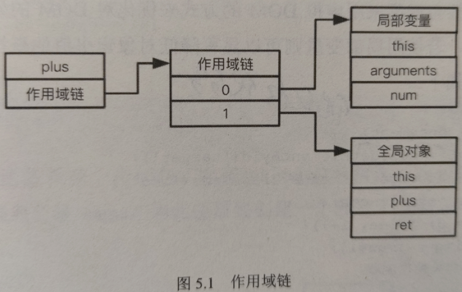
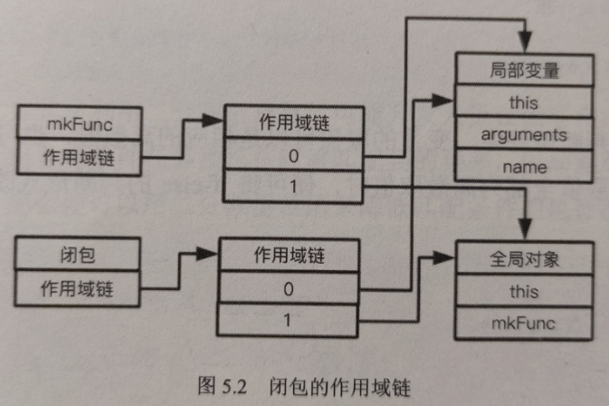

2024-06-08 14:18:09 · YinHao
一般而言，Js 的数据存取有 4 种方式：
直接字面量：字面量不存储在特定的位置，也不需要索引，仅仅代表自身，包括 布尔值、数字、字符串、对象、数组、函数、null、undefined 及正则表达式。
变量：通过关键字 const、let、var 定义的数据存储单元。
数组元素：存储在数组对象内部，通过数组下标数字进行索引。
对象属性：存储在对象内部，通过对象的字符串名称进行索引。
其中数组元素和对象属性不仅可以是直接字面量的形式，还可以是其他数组对象或对象属性组成的更为复杂的数据结构。
从读取速度来看，直接字面量与变量是非常快的，相比之下数组元素和对象属性由于需要索引，其读取速度也会因其组成结构的复杂度越高而变的越慢。
JavaScript 只有 全局作用域 和每个函数内部的 局部作用域。
全局作用域 就是无论此时执行的上下文是在函数内部还是函数外部，都能访问到存在于全局作用域中的变量或对象；
而定义存储在函数的 局部作用域 中的对象，只有在该函数内部执行上下文时才能都访问，而对函数外部不可见。
对于能够访问的数据，其在不同作用域中的查询也有 先后顺序。
这就涉及到 作用域链 的概念。
JavaScript 引擎会在页面加载后创建一个全局的作用域，然后每碰到一个要执行的函数，又会为其创建对应的作用域。
最终，不同的 块级作用域 和嵌套在内部的 函数作用域，会形成一个 作用域堆栈。
当前生效的作用域在堆栈的最顶端，由上往下就是当前执行上下文所能访问的作用域链。
举一个简单的例子：
function plus(num) {
return num + 1;
}
const ret = plus(6);
当这段代码刚开始执行时，函数 plus 的作用域中仅拥有一个指向全局对象的作用域，其中包括 this、函数对象 plus 及常量 ret，
而在执行到 plus 时，JavaScript 引擎会创建一个新的执行上下文和包含一些局部变量的活动对象。
执行过程会先对 num 标识符进行解析，即从作用域链的最顶层依次向下查找，直至找到 num 标识符。

记住这一条建议：
如果一个非局部变量在函数中的使用次数不止一次，那么最好使用局部变量进行存储。
function process() {
const target = document.getElementById("target");
const imgs = document.getElementsByClassName("img");
for (let i = 0; i < imgs.length; i++) {
const img = imgs[i];
//...
target.appendChild(img);
}
}
值得注意的是，document 属于全局作用域的对象，位于作用域链的最深处，在标识符解析过程中会被最后解析到。
由于它在此函数中使用了不止一次，所以可以考虑将其声明为一个局部变量，以提升其在作用域链中的查找顺序。
另外，计算类名为 img 的所有 DOM 节点数量的语句 imgs.length 执行了不止一遍。当查询所得的 DOM 节点列表存储到 imgs 中后，每次通过属性名或索引值读取 imgs 的属性时，DOM 都会重复执行一次对页面元素的查找，这个过程本身就会很缓慢。
优化代码：
function process() {
const doc = document;
const target = doc.getElementById("target");
const imgs = doc.getElementsByClassName("img");
const len = imgs.length;
for (let i = 0; i < len; i++) {
const img = imgs[i];
//...
target.appendChild(img);
}
}
前面讲到可以通过将频繁使用的位于较深作用域链层级中的数据，声明为局部变量来提升标识符解析与访问的速度。
若能将全局变量提升到局部变量的访问高度，是否还能提升到比局部变量更高的位置呢？答案是 可以的。
在当前局部变量作用域前增加新的活动变量作用域，但这种增长了作用域链的做法用多了会造成过犹不及的效果。
比如 with 语句，它能将函数外层的变量，提升到比当前函数局部变量还要高的作用域链访问级别上。
如下代码由于使用 with 的缘故，在语句中可直接访问 param 中的属性值，虽然方便但却降低了 show() 函数原本局部变量的访问速度，所以应尽量少用。
const param = {
name: "Tian",
value: 619,
};
function show() {
const cnt = 2;
with (param) {
console.log("name is ${name}");
}
}
另一个例子，就是经常用来进行异常捕获的 try-catch 语句，catch 代码块被用来处理捕获到的异常，
但其中包含错误信息 error 的作用域高于当前局部变量所在的代码块，
所以，建议不要在 catch 中处理过多复杂的业务逻辑，这样会降低数据的访问速度。
闭包的特性是函数能够访问局部变量之外的数据，例如下面的代码：
function mkFunc() {
const name = "Tian";
return function showName() {
console.log(name);
};
}
const mkFunc = mkFunc();
mkFunc();
showName() 函数就是一个闭包，它在 mkFunc() 函数被执行时被创建，并能访问 mkFunc() 函数的局部变量 name，
为此便需要创建一个独立于 mkFunc() 函数的作用域链

一般的函数执行完成后，其中局部变量所占用的空间会被释放，但闭包的这种特性会延长父函数中局部变量的生命周期。
这也就意味着使用闭包可能会带来更大的内存开销及内存可能泄漏的影响。
if (value === 0) {
//...
} else if (value === 1) {
//...
} else if (value === 2) {
//...
} else if (value >= 3 && value < 8) {
//...
} else {
//...
}
当变量的取值全部为离散取值时，便可将 if-else 的判断形式改为 switch
switch (value) {
case 0:
//...
break;
case 1:
case 2:
//...
break;
case 3:
//...
break;
default:
//...
break;
}
如果只有一两个条件的判断，通常 if-else 处理条件的时间会比 switch 更快，当判断条件多到两个以上时，因为在大多数时候，switch 处理单个条件的时间比 if-else 更快，所以 switch 更加适合。
if (value === 8) {
// 匹配到 8 的概率最高
} else if (value === 7) {
// 匹配到 7 的概率仅次于 8
} else if (value === 6) {
// 匹配到 6 的概率最低
} else {
// ...
}
if (value < 4) {
if (value < 2) {
// 值在小于 2 时的情况，也可以继续二分
} else {
// 值在 2 或 3 之间
}
} else {
if (value < 6) {
// 值在 4 或 5 之间
} else {
// 值在 6 到上界之间取值
}
}
// 条件映射数组
const valueArray = [value0, value1, value2, value3, value4];
valueArray[value];
同样基于对象属性的映射方式，也能实现类似的条件查找行为，
// 基于对象的属性映射
const valueMap = {
condition0: () => {
//...
},
condition1: () => {
//...
},
condition2: () => {
//...
},
};
valueMap[value];
当匹配条件的数量较小时，并不适合使用这种基于数组或对象的查找方式，因为查找数组或映射对象属性值往往比执行少量的条件判断语句要慢，
只有当取值范围变得非常大时，这种查找方式的性能优势才会凸显出来。
策略模式就是定义一系列的处理流程或算法，把他们封装起来，使得他们可以相互代替。
// 计算奖金的方法
// salary 月薪工资，level 绩效考核等级
function calculateBonus(salary, level) {
if (level === "S") {
return salary * 4;
} else if (level === "A") {
return salary * 3;
} else if (level === "B") {
return salary * 2;
}
}
如果奖金规则计算变得复杂起来，重构策略模式：
const strategies = {
S: (salary) => salary * 4,
A: (salary) => salary * 3,
B: (salary) => salary * 2,
};
function calculateBonus(salary, level) {
return strategies[level](salary);
}
当所要匹配的条件仅为一两个离散值的时，或者容易划分不同取值范围时，使用 if-else 语句。
当所要匹配的条件超过一两个但少于十个离散值时，使用 switch 语句。
当所要匹配的条件超过 10 个离散值时，使用基于数组索引或对象属性的查找方式（也就是使用策略模式）。
for (let i = 0; i < length; i++) {
//...
}
let i = 0;
while (i < length) {
// 循环体
i++;
}
do {
// 循环体
i++;
} while (i < length);
数组长度一般不会改变，且存取局部变量要比查找属性更省时，所以提前将要遍历的数组长度声明为局部变量，然后将该局部变量进行循环结束的条件判断，效率会更高一些。
// 较差的循环结束判断
const array = [1, 2, 3, 4, 5];
for (let i = 0; i < array.length - 1; i++) {
// ...
}
// 较好的循环结束判断
const len = array.length;
for (let i = 0; i < len - 1; i++) {
// ...
}
这在对包含较大规模 DOM 节点树的遍历过程中，效果会更加明显。
此外还有一种更简单的提升循环语句性能的方式：将循环变量递减到 0，而非递增到数组总长度
因为循环结束的判断是和常量 0 进行比较的，不存在对数据长度属性值的查找或局部变量的读取，其比较的运算速度会更快。
// 更好的循环结束判断
for (let k = array.length - 1; k >= 0; k--) {
//...
}
用来遍历 js 对象的可枚举属性
// 遍历 object 对象的所有属性
for (let prop in object) {
// 确保不会遍历到 object 原型链上的其他属性
if (object.hasOwnProperty(prop)) {
// ...
}
}
如上，由于他遍历属性的顺序不确定，循环结束的条件也无法改变，并且因为需要从目标对象中解析出每个可枚举的属性，即要检查对象的原型和原型链，所以其循环速度也会比其他循环方式要慢许多，
forEach
// 对数组进行迭代
myArray.forEach((value, index, arr) => {
//...
});
通常情况下，与 3 种基本的循环方法相比，其性能方面仅能达到后者的 1/8。
for…of
可以用来代替 for...in 和 forEach 循环，它不仅在性能方面比这二者更好，并且还支持对任何可迭代的数据结构进行遍历，比如数组、字符串、映射、集合等。但是与 3 种基本的循环方法相比还是差一些。
就是在函数执行体内部调用自身的行为
需要注意的问题：
比如缺少或不明确递归的终止条件会很容易造成用户界面的卡顿。
由于递归是一种通过空间换时间的算法，其执行过程中会入栈保存大量的中间运算结果，它对内存的开销与递归次数成正比，由于浏览器都会限制 js 的调用栈大小，超出限制递归执行便会失败。
任何递归函数都可以改写迭代的循环形式，虽然循环会引入自身的一些性能问题，但相比于长时间执行的递归函数，其性能开销还是要小很多。
// 递归方式实现归并排序
function merge(left, right) {
const result = [];
while (left.length > 0 && right.length > 0) {
// 把最小的先取出来放在结果中
if (left[0] < right[0]) {
result.push(left.shift());
} else {
result.push(right.shift(0));
}
}
// 合并
return result.concat(left).concat(right);
}
// 递归函数
function mergeSort(array) {
if (array.length === 1) return array;
// 计算数组中点
const middle = Math.floor(array.length / 2);
// 分割数组
const left = array.slice(0, middle);
const right = array.slice(middle);
return merge(mergeSort(left), mergeSort(right));
}
可以看出这段代码中，mergeSort() 函数会被频繁调用，对于包含 n 个元素的数组来说，mergeSort() 函数会被调用 2n - 1 次，随着所处理数组元素的增多，这对浏览器的调用栈是一个严峻的考验。
改为迭代方式：
// 用迭代方式改写递归函数
function mergeSort(array) {
if (array.length === 1) return array;
const len = array.length;
const work = [];
for (let i = 0; i < len; i++) {
work.push([array[i]]);
}
// 确保总数组长度为偶数
if (len & 1) work.push([]);
// 迭代两两归并
for (let lim = len; lim > 1; lim = (lim + 1) / 2) {
for (let j = 0, k = 0; k < lim; j += 1, k += 2) {
work[j] = merge(work[k], work[k + 1]);
}
// 数组长度为奇数时，补一个空数组
if (lim & 1) work[j] = [];
}
return work[0];
}
虽然在执行时间上要慢一点，但它不会受到浏览器对 js 调用栈的限制。
如果在递归的过程中，前一次的计算结果能被后一次计算使用，那么缓存前一次的计算结果就能有效避免许多重复工作，这样能带来很好的性能提升。
// 计算某个阶乘
function factorial(n) {
if (n === 0) {
return 1;
} else {
return n * factorial(n - 1);
}
}
利用缓存来减少不必要计算的解决方案：
function memoize(func, cache) {
const cache = cache || {};
return function (args) {
if (!cache.hasOwnProperty(args)) {
cache[args] = func(args);
}
return cache[args];
};
}
该方法利用函数闭包有效避免了类似计算多次阶乘时的重复操作，确保只有当一个计算在之前从未发生过时，才产生新的计算值。
// 改写
const memorizeFactorial = memoize(factorial, {
0: 1,
1: 1,
});
这种方式也存在性能问题，比如函数闭包延长了局部变量的存活期。如果数据量过大又不能有效回收，则容易导致内存溢出。
JavaScript 代码的执行通常会阻塞页面的渲染，
JavaScript 是单线程的，这意味着浏览器的每个窗口或页签在同一时间内，要么执行 JavaScript 脚本，要么响应用户操作刷新页面，也就是二者的行为是相互阻塞的。
例如：JavaScript 代码正在执行，用户页面会处于锁定状态无法进行输入，如果 JavaScript 代码执行时间过长，给用户带来的糟糕的体验。
对于浏览器的这种限制，我们可能就需要对长时间运行的脚本进行重构，尽量保证一段脚本的执行不超过 100ms，如果超出这个阈值，用户明显就会有网站卡顿变慢的使用体验。
引起 JavaScript 执行时间过长的原因：
- 01 DOM 的频繁修改，相比于 JavaScript 脚本的运算，DOM 操作的开销都是极高的，
- 02 不恰当的循环，可能因为循环次数执行过多，或者每次循环中执行了过多操作，若将功能尽可能分解就会明显缓解这个问题。
- 03 存在过深的递归，浏览器对 JavaScript 调用栈存在限制，将递归改写成迭代能有效的避免此类问题。
JavaScript 既要处理运算又要响应与用户的交互，它是如何完成的呢？答案是异步。
当我们创建一个异步任务时，它其实没有马上执行，而是被 JavaScript 引擎放置到一个队列中，当执行完成一个任务脚本后，JavaScript 引擎便会挂起让浏览器去做其他工作。
比如更新页面，当页面更新完成后，JavaScript 引擎便会查看此异步队列，并从中取出一个任务脚本去执行，只要该队列不为空，这个过程便会不断重复，当队列中的任务脚本执行完成后，JavaScript 引擎便处于空闲状态，直到有新的任务脚本进入该异步队列。
据此我们便有了对执行过长任务的一种优化策略，即将一个较长的任务拆分为多个异步任务，从而让浏览器给刷新页面留出时间，但过短的延迟时间也可能会让浏览器响应不及时，因为在几毫秒的时间里无法正确完成页面的更新与显示，通常可以用定时器来控制一个 100ms 左右的延迟，同时定时器也是 JavaScript 中创建一个加入队列十分有效的方法：
// 将一个对大数组的处理过程拆成多个异步队列
function chunk(array, process) {
setTimeout(() => {
const item = array.shift();
process(item);
if (array.length > 0) {
setTimeout(arguments.callee, 100);
}
}, 100);
}
几乎所有编程语言中，位操作的执行速度都是十分快的，
JavaScript 中支持 6 种位操作，分别是 按位与、按位或、按位异或、按位取反、按位左移、按位右移。
// 声明两个变量
const a = 3; // 二进制为：011
const b = 6; // 二进制为：110
let result;
// 按位与
result = a & b;
console.log(result.toString(2)); // 10
// 按位或
result = a | b;
console.log(result.toString(2)); // 111
// 按位异或
result = a ^ b;
console.log(result.toString(2)); // 101
// 按位取反
result = ~a;
console.log(result.toString(2)); // -11100
// 按位左移
result = a << 1;
console.log(result.toString(2)); // 110
遍历数组元素，通过取余判断奇偶
const len = array.length;
for (let i = arr.length - 1; i >= 0; i--) {
if (i % 2) {
// 奇数
} else {
// 偶数
}
}
const len = array.length;
for (let i = arr.length - 1; i >= 0; i--) {
if (i & 1) {
// 奇数
} else {
// 偶数
}
}
上面带来的性能提升与之前的取余操作相比，通常是翻倍的，循环规模越大带来的提升越明显。
无论如何优化 JavaScript 代码，也不可能比 JavaScript 引擎内置的原生方法更快。
比如：querySelector() 和 querySelectorAll() 方法会比基于 JavaScript 进行的 CSS 查询快近 10%。